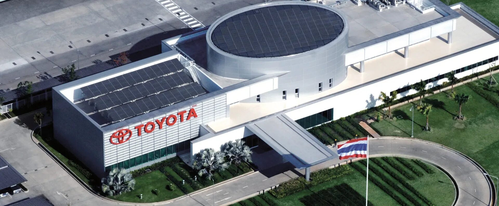
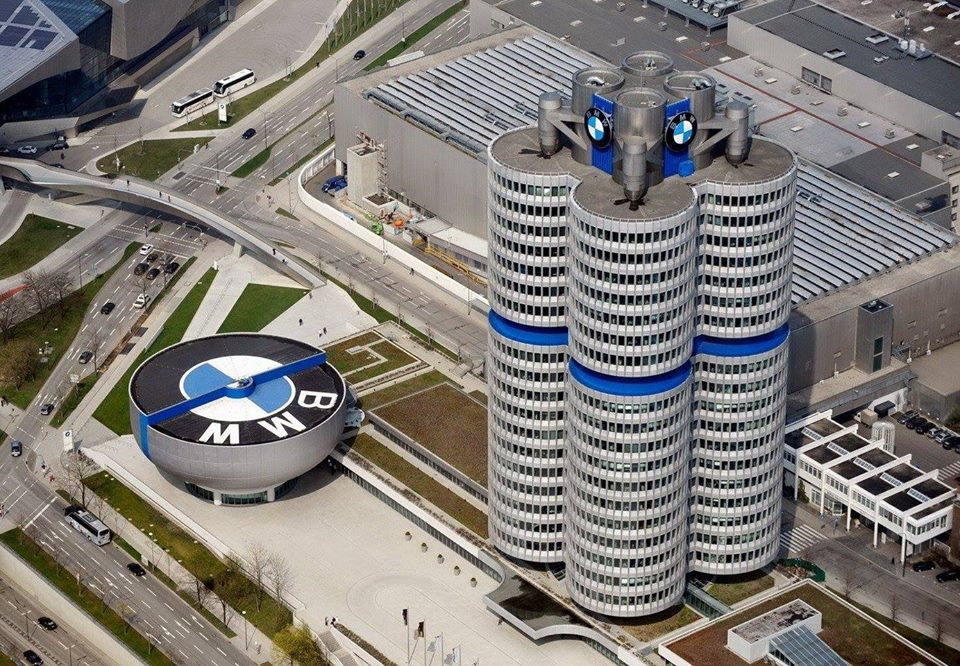
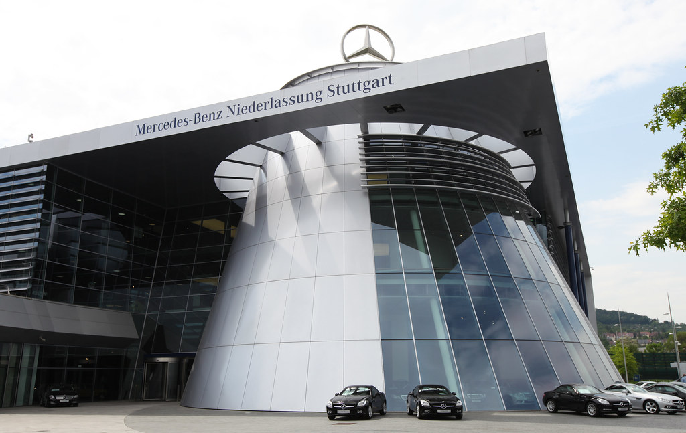
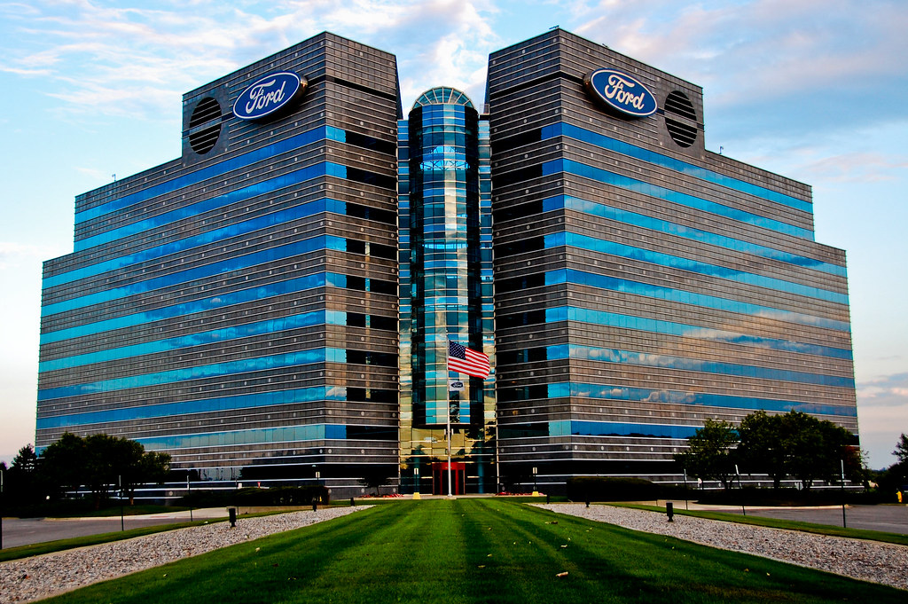
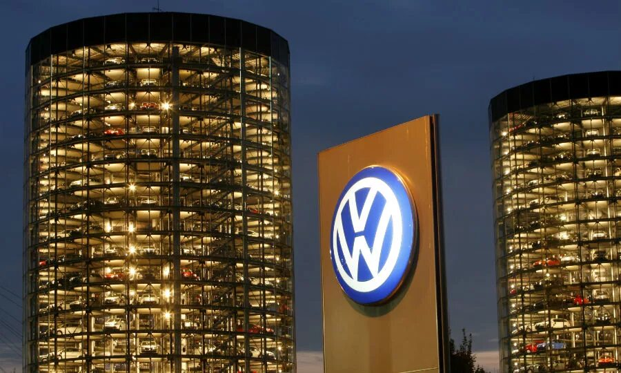
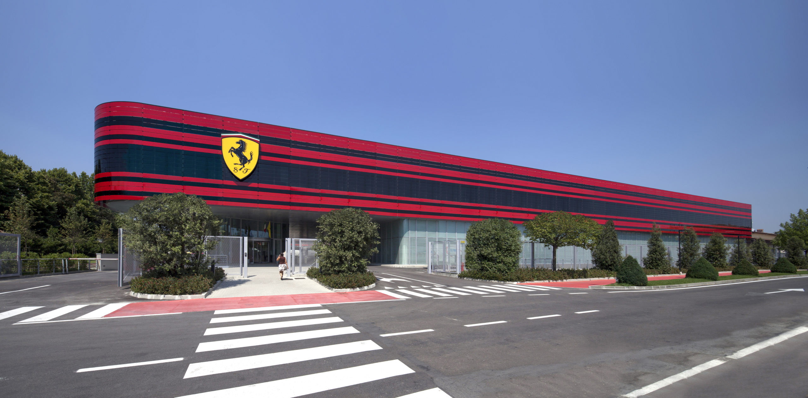
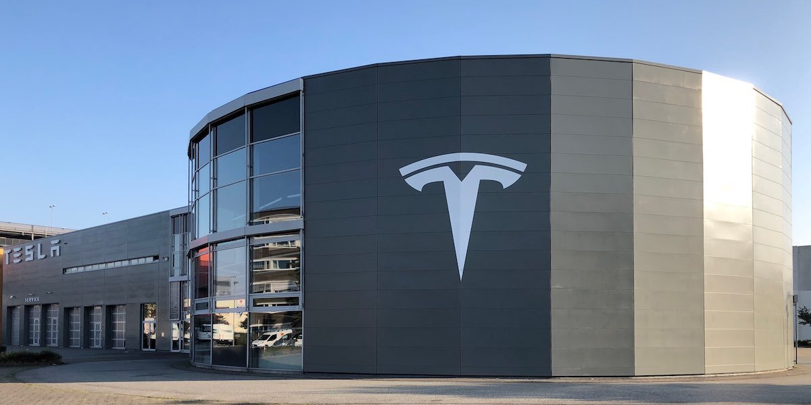

Toyota — японский автопроизводитель, известный своими надёжными автомобилями. Компания была основана в 1937 году Киитиро Тойода.
Название было изменено c "Tōyoda" на "Toyota" потому, что оно проще пишется и произносится на японском языке.
BMW расшифровывается как Bayerische Motoren Werke, что означает "Баварские моторные заводы". Компания начала свою деятельность в 1916 году, производя авиационные двигатели во время Первой мировой войны.
Логотип BMW представляет собой вращающийся пропеллер самолета, символизируя авиационное прошлое компании.
Компания Mercedes-Benz является одним из старейших производителей автомобилей в мире. Она была создана в результате слияния двух компаний — Daimler-Motoren-Gesellschaft и Benz & Cie. в 1926 году.
Название "Mercedes" произошло от имени дочери одного из первых клиентов Готлиба Даймлера, Эмиля Еллинека.
Ford Motor Company была основана Генри Фордом в 1903 году. Одной из главных инноваций Форда стал конвейерный метод сборки автомобилей, который значительно снизил стоимость производства и сделал автомобили доступнее для широких слоев населения.
Модель T, представленная в 1908 году, стала первым автомобилем массового производства и имела огромное влияние на развитие автомобильной промышленности.
Volkswagen, что значит "народный автомобиль", был основан в Германии в 1937 году. Основатель компании Фердинанд Порше разработал компактный автомобиль Beetle ("Жук"), который должен был стать доступным транспортным средством для каждого гражданина.
Bo время Второй мировой войны завод Volkswagen занимался производством военных транспортных средств. После войны, благодаря американским инвестициям, компания смогла восстановиться и снова начать выпускать гражданские автомобили.
Ferrari известна своим производством спортивных автомобилей класса люкс. Компания была основана Энцо Феррари в 1939 году. Первый автомобиль Ferrari был выпущен в 1947 году.
Знаменитый красный цвет Ferrari получил название Rosso Corsa ("Гоночный Красный") и стал символом скорости и страсти.
Tesla Motors была основана Илоном Маском в 2003 году. Компания специализируется на производстве электромобилей и возобновляемых источников энергии.
Первая модель Tesla Roadster была представлена в 2008 году и стала первым серийным электрическим спорткаром.
